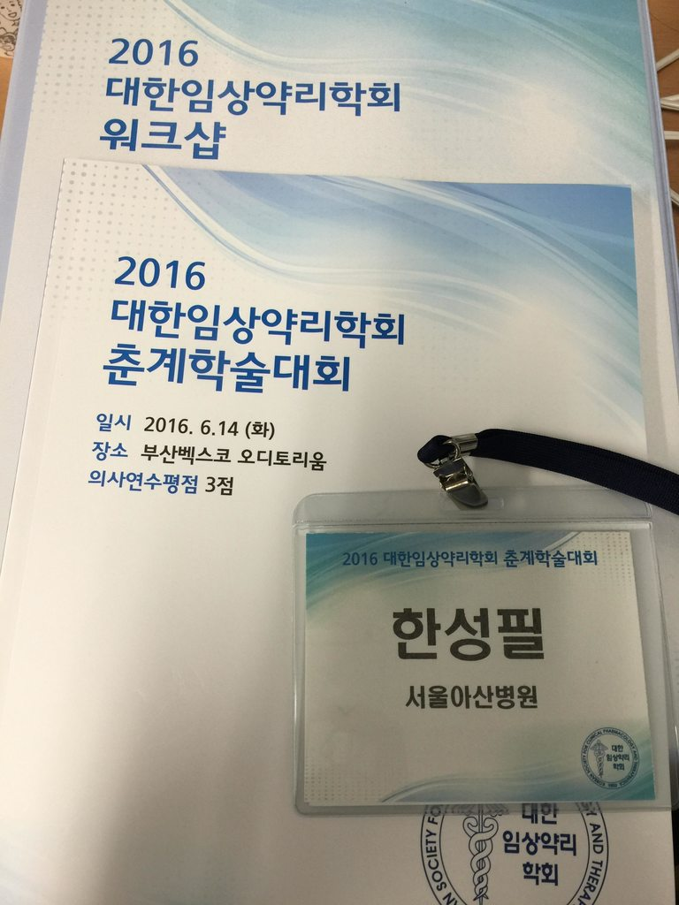

Chapter 7 2016 KSCPT

Materials
7.1 Opening Remark
- Yil-Seob Lee (president of KSCPT)
7.2 First Session
- Chair : Deborah Chee(KoNECT)
7.2.1 13:20~14:00 Precision Medicine: A Clinical Pharmacological Perspective
- Speaker: Munir Pirmohamed (University of Liverpool, UK)
- Fava beans - Favism G6PD deficiency - withrawal of antimalarials
- 2015 Obama Precision Medicine $215m / 2016 China $8b
- Phenotypic definition(current standard) - Molecular definition (disease stratification) - Drug variability
- Mandatory genomic testing - EMA SmPC
- Pharmacogenomics Journal (2015) 1-10
- Crizotinib vs CTx in advanced ALK+ lung cancer (NEJM 2013)
- Novel trial design (Nature 2015)
- Umbrella trial (single tumor - multiple arm - multiple drugs)
- Basket study
- Support of humen genetic evidence for approved drug indication (Nature Genetics)
- Sclerosteosis - skeletal overgrowth and syndactyly, AR , mutations in SOST gene - target sclerostin
- anti-sclerostin Ab (ROMOSOZUMAB, BLOSOZUMAB) - bone density increase - mouse
- New cardiovascular targets
- PCSK9 - GOF->LDL-C increase & CVD
- ANGPTL4
- HLA-genotype and carbamazepine-induced cutaneous ADR: systemic review (CPT,2012)
- ITCH (Drug hypersensitivity)
- Phase I, II - very strong association (Manhattan plot) - GWAS - ALK(germline polymorphism-> T cell expansion)
- SJS GWAS (Genin 2011) http://www.ncbi.nlm.nih.gov/pubmed/21801394
- Skin, Liver
- CBZ-induced hypersensitivity vs CBZ-tolerant patients
- HLA-A*31:01(thirtyone o one)
- HLA and ADR
- The effect of pharmacogenetic profiling with a clinical decision support tool on healthcare resource utilization and estimated costs in the elderly exposed to polypharmacy. (2016) http://www.ncbi.nlm.nih.gov/pubmed/26478982
- Somatic genomes -> microbiome is also important
- Digoxin and antibiotics (1981, NEJM) -> (2013 Science) Cardiac drug inactivation by human gut bacteria
- Microbiome and Cancer Immunotherapy - Snyder, Science Nov 2015
- Two books introduced.
- Prescription for nhs
- clinical pharma dynamic medical specialty
7.2.2 14:00~14:30 The role of pharmacogenomics in drug development, regulatory review and clinical practice
- Speaker: Shiew-Mei Huang (North Potomac, MD, USA)
- CPIC (Clinical pharmacogenetics guidelines)
- IFNL3(IL28B) HCV treatment Favorable response = 77% Asian (Genotype CC)
- Paving the way for Personalized Medicine (Oct 2013)
- Avacavir HLA-B*5701 (RCT) Utility of pharmacogenetic tests
- Munir mentioned - CBZ & HLA-B*1502
- ASCO meeting - CTx vs Targeted therapy - Umbrella study
- Drug labeling “FDA-approved test”
- XALKORI - Crizotinib and ALK
- CPT Feb 2016 - Precision Medicine , “Companion Diagnostics” Something unique to conduct , “Complementary diagnostics”
- Eliglustat and CYP2D6 , Drug labeling
- Center for Device
- Integral to the future of personalized or precision medicine
- NGS
- PrecisionFDA initiative
- 23andMe - Drug response , Confidence
- Cleared or approved FDA
- CLIA-certified laboratory
7.2.2.1 My Question
- One NGS - individual test to is there a review of all-in-one Test in progress?
7.2.3 14:30~15:00 The Liver-Gut Microbiota Axis Modulates Inter-Individual Variability in Xenobiotic Disposition and Toxicology
- Speaker: Eric Chun Yong Chan (National University of Singapore)
- Liver - major organ for disposition and detoxification
- 60% (explanble) vs 40% (how about this?) - superorganism
- 400 different species (~1.5kg)
- Haiser (2012, Science) Gut microbe - drug, host interaction
- TOC: 1 DMD paper , 2 in-house project
- DMD - reduction, hydrolysis
- absorption - simvastatin - poor responder, average, good 10% 80% 10%
- OATP1B1 in liver and intestine
- Possibility of competition between simvastatin and bile acids for hepatic uptake by transporter
- antibiotics - nitro-reduction by gut microbiota inhibition
- Therapeutic fficacy - DDI
- PCA analysis PNAS 2009 - significant differences in concentration
- PNAS 2009 inverse corr - p-cresol <-> AAP
- 2nd part - Tacrine - first drug approved for AD. Toxicological manifestation - increased AST/ALT
- Interindividual variability. why?
- Tacrine metabolism - hydroxylation / glucuronide
- mitochondrial toxicity and hypoxia-reoxygenation
- part I~V
- Tacrine-induced transaminitis
- EXT - CMax,AUC high why? - phase II metabolite?
- host gene - mRNA
- GC/TO
- PCA analysis principal component analysis
- NORMAL Lactobacillus
- EXT Bacteriode Blautia
- Metagenome level
- Liver - Tacrine-> TacrineNGlucuronide
7.3 Second Session
- Chair : Yong-Bok Lee(Chonnam National University)
7.3.1 15:20~15:50 The role of stem cells in discovery and validation of pharmacogenomic markers
- Speaker : Eileen Dolan (The University of Chicago, USA)
- Ototoxicity, CTx Toxicity - hearing loss, peripheral neuropathy
- dose-limiting toxicity - platinum, taxanes, vinca, epothilones, bortezomib
- numbness, tingling, burning/stabbing pain
- partially , can be permanent
- Duloxetine - SNRI - CIPN
- pharmacogenomic studies - optimal model - testicular cancer -
- platinating agents
- CIPN - >300mg/m2, dorsal root g. cell apoptosis, affects large neurons, axonal projections
- CTCAE of CIPN, patient-reported measures preferred (CIPN EORTC-CPIN20)
- PCA analysis
- age, smoking
- GWAS - CIPN6 -> CAMTA1, RGS, WDR1, MAPK9, COA1, ILR2A
- Polygenic architecture
- PIPN : ECOG: rs3125923
- Stem cells - problems - identifying, priortizing
- cell-based PD analysis
- iPSC technology in PGx, CRISPR
- Neuronal measurements - total outgrowth processes, process length, branches, cell body area
- C, P, 5FU, Bortezomib, Vinc, Thalidomide
- inhibition of neurite outgrowth
- VIN - GWAS 2000 patients
- CEP72 - microtubules assembly, TT allele - susceptible -> lower CEP72 mRNA expression
- knockdown of CEP72 in iPCSC -> enhancing sensitivity to vincristine
7.3.1.1 Questions - neurite outgrowth
- Neurons- mature enough?
7.3.2 15:50~16:20 Pharmacogenomics and Epigenomics
- Speaker: Matthias Schwab (IKP Stuttgart, Germany)
- Prognostic predictors
- Genetic make-up
- 135 FDA-approved drugs with labeled pharmacogenomic information (2015-05-20)
- top 30 drugs with pharmacogenetic risk (w/ or w/o high-risk diplotype for gene)
- Genomics, proteomics metabolomics, microbiomics
- Genome Medicine 2016 (Auffray, Schwab)
- NEJM
- Cocktail approach - a single dose PK study - old fashion clinical pharmacology approach? -
- Metoprolol and Torsemide PK - heretability
- Koryza Genet Med 2016 - comprehensive analysis - ESP project (n=6500) and 1000 genomes project
- PNAS 2005 Fraga - Epigenomics and DNA methylation
- miRNA, methylation, histone modification(acetylation)
- CPT 2016, Fisel, Schaeffeler, Schwab - DNA methylation and its impact on disease pathophysioloy and drug therapy
- Heatmap - ADME genes - SLC transporters
7.3.2.1 My Quesion
- Can we develop therapeutics which target locus of epigenetic (Decitabine)- Renal cancer cell - treatment of decitabine - demethylating agents (Specificity?)
- Epigenomics
7.3.3 16:20~16:50 Emerging roles of human CYP1B1 in cancer growth and metastasis
- Speaker: Young-Jin Chun (Chung-Ang University, KOREA)
- P450 (CYP1B1)
- Estrogen metabolism : E2->4-OHE2(endogenous mutagen)
- ZYC300 cancer vaccine - CYP1B1 DNA Vaccine
- Immunity to CYP1B1 -> Clinical benefit
- 과발현시 - PCNA increased
- TMS - specific human CYP1B1 - DMBA->PPCNA increased, DMBA+TMS->PBNA back to normal
- CYP1B1 -> EMT (ECADHERIN, ZEB1, Vimentin, twist1 ) FUNCTIONAL STUDY , Can we transmembrane migration - cancer progression
- SP1 Transctiption factors - Mithramycin A(binding inhibittor) DMBA에의해 증가한 에스피1등이 mitA를 억제.
- 이러한 결과들을 통해서 SP1이 암 증식 chip assay
- 4OHE는 EMT 촉진된다.
- 억제 - Mithramycin A
- 촉진 - DMBA, CYP1B1, SP1, 4OHE
- Matrigel, migration -> migration, invasion
7.3.3.1
1B1에 의해 대사되는 irinotecan - 알수가 없다. Tumor 조직을 갖고 enzyme activity 측정전에. active metabolism 2D6는 steroid
7.3.4 16:50~17:20 omics for precision Medicine : Clinical Implementation in oncology
- Speaker: Kyu-pyo Kim (University of Ulsan College of Medicine, KOREA)
- effects are not immediate / severe adverse effects / narrow therapeutic window
- UGT1A1 genotypes - different enzyme activities , Irinotecan
- Irinotecan -> practical decision making - not reached.
- genotype information - strong enough?
- neutropenia, diarrhea
- mutations are abundant - mutational loading (high- melanoma, lung sq cel carcinoma)
- Point mutations, copy # variation -> omics + NGS -> clinical interpretation -> clinical decision making
- Ca Cancer J Clin 2016 - 1 month TIME IS IMPORTANT FOR PATIENTS.
- Issues : Forces or hurdles - COSTS - volume of patients/turnaround time/Central testing/Quality control
- NCI-Match - somatic mutation - Oncomine Comprehensive Assay Gene List - How to report???
- KRAS A146 mutation in CRC -> CTX guideline - clinical trial
- CPCM - KCSG 11th methodology -
- Transition : from research to practice - CLIA (23andMe)
- NGS 임상검사실 인증제도 추진중임.
- Summary - abundance of information is helpting us
- there are many hurdles
- multi-disciplinary efforts are needed.